13 AED de bivariadas
Existe alguma relação entre as variáveis? A relação é linear? Há colinearidade? Ou seja, diferentes variáveis tem o mesmo padrão?
13.1 Dados do tutorial
Vamos importar novamente os conjuntos de dados de avistamento de aves do cerrado (utilizado no capítulo 11) e de parcelas em caixetais (utilizado no capítulo 7):
## Lendo a planilha com read.table
avesc <- read.table("aves_cerrado.csv", row.names = 1, header = T, sep = ";", dec = ",", as.is = T, na.strings = c("NA", "", "NULL"))caixeta <- read.csv("caixeta.csv") ## arquivo caixeta.csv deve estar no diretorio de trabalho
# note que mantemos todos os argumentos padrão (veja o formato do arquivo caixeta)13.2 Fatores e contagens
Já vimos a função table() para contar valores em fatores e vetores em casos de univariados.
Podemos usar a mesma função para gerar tabelas de contingência entre dois ou mais fatores.
## Numero de fustes de cada especie por local
tb <- table(caixeta$especie, caixeta$local)
class(tb)## [1] "table"tb| chauas | jureia | retiro | |
|---|---|---|---|
| Alchornea triplinervia | 0 | 3 | 12 |
| Andira fraxinifolia | 0 | 4 | 0 |
| bombacaceae | 0 | 1 | 0 |
| Cabralea canjerana | 0 | 4 | 0 |
| Callophyllum brasiliensis | 7 | 0 | 0 |
| Calophyllum brasiliensis | 0 | 4 | 0 |
| Cecropia sp | 0 | 0 | 1 |
| Coussapoa macrocarpa | 0 | 3 | 0 |
| Coussapoa micropoda | 2 | 0 | 7 |
| Cryptocaria moschata | 0 | 2 | 0 |
| Cyathea sp | 0 | 0 | 2 |
| Eugenia oblongata | 0 | 0 | 2 |
| eugenia3 | 0 | 1 | 0 |
| fabaceae1 | 0 | 1 | 0 |
| Ficus sp | 0 | 2 | 0 |
| Gomidesia sp | 0 | 1 | 0 |
| Ilex durosa | 0 | 8 | 0 |
| Ilex sp | 0 | 0 | 2 |
| indet.1 | 1 | 0 | 0 |
| indet.2 | 1 | 0 | 0 |
| indet.3 | 1 | 0 | 0 |
| Inga sp | 0 | 4 | 0 |
| Jacaranda puberula | 0 | 2 | 0 |
| jussara | 0 | 37 | 0 |
| Matayba sp | 0 | 1 | 0 |
| Mela 1 | 0 | 0 | 63 |
| Mela 2 | 0 | 0 | 2 |
| Myrcia sulfiflora | 96 | 0 | 0 |
| Myrtaceae 3 | 0 | 0 | 3 |
| myrtaceae1 | 4 | 0 | 0 |
| myrtaceae2 | 1 | 0 | 0 |
| myrtaceae4 | 1 | 0 | 0 |
| Pera glabrata | 0 | 1 | 0 |
| Persea sp | 0 | 3 | 0 |
| Pisonia sp | 0 | 2 | 0 |
| Psidium sp | 3 | 17 | 0 |
| Simplocos sp | 0 | 2 | 0 |
| Solanum sp1 | 0 | 0 | 1 |
| Solanum sp2 | 0 | 0 | 1 |
| Syagrus romanzoffianus | 1 | 0 | 0 |
| Tabebuia 1 | 0 | 0 | 10 |
| Tabebuia cassinoides | 306 | 138 | 254 |
| Tibouchina nutticeps | 2 | 0 | 0 |
# convertemos num data.frame
tb <- as.data.frame.matrix(tb)
class(tb)## [1] "data.frame"# calculo o total de individuos por especie
total <- apply(tb, 1, sum)
total## Alchornea triplinervia Andira fraxinifolia bombacaceae
## 15 4 1
## Cabralea canjerana Callophyllum brasiliensis Calophyllum brasiliensis
## 4 7 4
## Cecropia sp Coussapoa macrocarpa Coussapoa micropoda
## 1 3 9
## Cryptocaria moschata Cyathea sp Eugenia oblongata
## 2 2 2
## eugenia3 fabaceae1 Ficus sp
## 1 1 2
## Gomidesia sp Ilex durosa Ilex sp
## 1 8 2
## indet.1 indet.2 indet.3
## 1 1 1
## Inga sp Jacaranda puberula jussara
## 4 2 37
## Matayba sp Mela 1 Mela 2
## 1 63 2
## Myrcia sulfiflora Myrtaceae 3 myrtaceae1
## 96 3 4
## myrtaceae2 myrtaceae4 Pera glabrata
## 1 1 1
## Persea sp Pisonia sp Psidium sp
## 3 2 20
## Simplocos sp Solanum sp1 Solanum sp2
## 2 1 1
## Syagrus romanzoffianus Tabebuia 1 Tabebuia cassinoides
## 1 10 698
## Tibouchina nutticeps
## 2# ordeno minha tabela orginal pelo total em ordem decrescente de abundância
tb <- tb[order(total, decreasing = T), ]
head(tb)| chauas | jureia | retiro | |
|---|---|---|---|
| Tabebuia cassinoides | 306 | 138 | 254 |
| Myrcia sulfiflora | 96 | 0 | 0 |
| Mela 1 | 0 | 0 | 63 |
| jussara | 0 | 37 | 0 |
| Psidium sp | 3 | 17 | 0 |
| Alchornea triplinervia | 0 | 3 | 12 |
# se eu quiser uma tabela de presença e ausência
# bastaria substituir os valores>0 por 1
tb[tb > 0] <- 1
head(tb)| chauas | jureia | retiro | |
|---|---|---|---|
| Tabebuia cassinoides | 1 | 1 | 1 |
| Myrcia sulfiflora | 1 | 0 | 0 |
| Mela 1 | 0 | 0 | 1 |
| jussara | 0 | 1 | 0 |
| Psidium sp | 1 | 1 | 0 |
| Alchornea triplinervia | 0 | 1 | 1 |
# assim, agora eu posso saber quantas especie por localidade
apply(tb, 2, sum)## chauas jureia retiro
## 13 22 13A função xtabs() tabula dados de frequência.
## xtabs: tabulacao de dados de frequencia
## Vamos usar Dataframe dos sobreviventes dos sobreviventes e mortos do Titanic
?Titanic # veja o que são esses dadosdata("Titanic") # puxamos esse dado
class(Titanic)## [1] "table"tit <- as.data.frame(Titanic) # converte em data.frame
head(tit)| Class | Sex | Age | Survived | Freq |
|---|---|---|---|---|
| 1st | Male | Child | No | 0 |
| 2nd | Male | Child | No | 0 |
| 3rd | Male | Child | No | 35 |
| Crew | Male | Child | No | 0 |
| 1st | Female | Child | No | 0 |
| 2nd | Female | Child | No | 0 |
# classe de passageiros
names(tit)## [1] "Class" "Sex" "Age" "Survived" "Freq"str(tit)## 'data.frame': 32 obs. of 5 variables:
## $ Class : Factor w/ 4 levels "1st","2nd","3rd",..: 1 2 3 4 1 2 3 4 1 2 ...
## $ Sex : Factor w/ 2 levels "Male","Female": 1 1 1 1 2 2 2 2 1 1 ...
## $ Age : Factor w/ 2 levels "Child","Adult": 1 1 1 1 1 1 1 1 2 2 ...
## $ Survived: Factor w/ 2 levels "No","Yes": 1 1 1 1 1 1 1 1 1 1 ...
## $ Freq : num 0 0 35 0 0 0 17 0 118 154 ...## Quanto sobreviventes por sexo?## Precisamos da funcao xtabs
?xtabs # veja o help dessa funcão:xtabs(Freq ~ Sex + Survived, data = tit)| No | Yes | |
|---|---|---|
| Male | 1364 | 367 |
| Female | 126 | 344 |
# em porcentagem
tb <- xtabs(Freq ~ Sex + Survived, data = tit)
prop.table(tb, margin = 1)| No | Yes | |
|---|---|---|
| Male | 0.7879838 | 0.2120162 |
| Female | 0.2680851 | 0.7319149 |
# ou, se preferir
round(prop.table(tb, margin = 1) * 100)| No | Yes | |
|---|---|---|
| Male | 79 | 21 |
| Female | 27 | 73 |
# Quanto sobreviventes por classe de viagem?
xtabs(Freq ~ Class + Survived, data = tit)| No | Yes | |
|---|---|---|
| 1st | 122 | 203 |
| 2nd | 167 | 118 |
| 3rd | 528 | 178 |
| Crew | 673 | 212 |
# note que na primeira classe 203 sobreviveram
# eu poderia ter perguntado isso assim:
sum(tit[tit$Class == "1st" & tit$Survived == "Yes", "Freq"])## [1] 203# ou seja, a funcao xtabs calculou a soma da frequencia
# porcentagem
prop.table(xtabs(Freq ~ Class + Survived, data = tit), margin = 1)| No | Yes | |
|---|---|---|
| 1st | 0.3753846 | 0.6246154 |
| 2nd | 0.5859649 | 0.4140351 |
| 3rd | 0.7478754 | 0.2521246 |
| Crew | 0.7604520 | 0.2395480 |
## E para combinacoes de mais de duas variaveis
tb2 <- xtabs(Freq ~ Class + Survived + Sex, data = tit)
tb2 # veja o resultado e observe duas virgulas| Class | Survived | Sex | Freq |
|---|---|---|---|
| 1st | No | Female | 4 |
| Male | 118 | ||
| Yes | Female | 141 | |
| Male | 62 | ||
| 2nd | No | Female | 13 |
| Male | 154 | ||
| Yes | Female | 93 | |
| Male | 25 | ||
| 3rd | No | Female | 106 |
| Male | 422 | ||
| Yes | Female | 90 | |
| Male | 88 | ||
| Crew | No | Female | 3 |
| Male | 670 | ||
| Yes | Female | 20 | |
| Male | 192 |
tb2[, , 1] # para Female| No | Yes | |
|---|---|---|
| 1st | 118 | 62 |
| 2nd | 154 | 25 |
| 3rd | 422 | 88 |
| Crew | 670 | 192 |
tb2[, , 2] # para Male| No | Yes | |
|---|---|---|
| 1st | 4 | 141 |
| 2nd | 13 | 93 |
| 3rd | 106 | 90 |
| Crew | 3 | 20 |
# note que não vimos isso antes, tb2, neste caso é um array, que um objeto que pode ter múltiplas dimensões, por isso as duas vírgulas, porque tem 3 dimensoes13.3 Variável numérica vs. fator
A função tapply() faz uso de uma função sobre sobre um vetor numérico para cada categoria de um fator.
A função aggregate() faz o mesmo, mas permite múltiplos fatores e retorna um data.frame.
## tapply: resumo de uma variavel numerica, separada por niveis de um ou mais fatores
?tapply # veja o help dessa funçãohead(avesc) # se nao tem isso, importe novamente o arquivo aves_cerrado| fisionomia | urubu | carcara | seriema | |
|---|---|---|---|---|
| Ce1 | Ce | 5 | 18 | 6 |
| Ce2 | Ce | 7 | 7 | 6 |
| Ce3 | Ce | 5 | 14 | 4 |
| Ce4 | Ce | 3 | 12 | 5 |
| Ce5 | Ce | 4 | 16 | 4 |
| Ce6 | Ce | NA | 20 | NA |
# número de individuos de carcara por fisionomia
tapply(avesc$carcara, avesc$fisionomia, sum)## CC ce Ce CL
## 212 14 291 NA# numero de individuos de urubo por fisionomia
tapply(avesc$urubu, avesc$fisionomia, sum)## CC ce Ce CL
## 299 13 NA 298# numero médio de seriemas por localidade+fisionomia
tapply(avesc$seriema, avesc$fisionomia, mean)## CC ce Ce CL
## NA 4.0 NA 5.6## "Tabelas dinamicas": funcao aggregate
## Criar data.frame com altura media dos fustes por especie e por local?aggregate # veja o help dessa funçãonames(caixeta)## [1] "local" "parcela" "arvore" "fuste" "cap" "h" "especie"# circunferencia máxima por especie
ob1 <- aggregate(caixeta$cap, by = list(especie = caixeta$especie), FUN = max)
class(ob1) # obtenho um data frame## [1] "data.frame"head(ob1)| especie | x |
|---|---|
| Alchornea triplinervia | 840 |
| Andira fraxinifolia | 340 |
| bombacaceae | 380 |
| Cabralea canjerana | 720 |
| Callophyllum brasiliensis | 1130 |
| Calophyllum brasiliensis | 2100 |
# neste caso também poderia fazer assim
ob2 <- tapply(caixeta$h, caixeta$especie, max)
class(ob2) # mas neste caso nos temos um array (um vetor unidimensional)## [1] "array"ob2[1:10]## Alchornea triplinervia Andira fraxinifolia bombacaceae
## 140 90 150
## Cabralea canjerana Callophyllum brasiliensis Calophyllum brasiliensis
## 150 200 160
## Cecropia sp Coussapoa macrocarpa Coussapoa micropoda
## 70 100 110
## Cryptocaria moschata
## 140# mas se eu quiser por localidade e por especie, preciso usar aggregate
caixeta.alt <- aggregate(caixeta$h, by = list(local = caixeta$local, especie = caixeta$especie), FUN = max)
head(caixeta.alt)| local | especie | x |
|---|---|---|
| jureia | Alchornea triplinervia | 140 |
| retiro | Alchornea triplinervia | 100 |
| jureia | Andira fraxinifolia | 90 |
| jureia | bombacaceae | 150 |
| jureia | Cabralea canjerana | 150 |
| chauas | Callophyllum brasiliensis | 200 |
## Vamos calcular a area basal (soma da area de todo os fustes)
## calculando a area basal de cada fuste, considerando o fuste um círculo perfeito, poderíamos usar:
caixeta$ab <- caixeta$cap^2 / 4 * pi
## e agora criamos a planilha, com aggregate, somando as areas basais dos fustes
caixeta.2 <- aggregate(caixeta$ab, by = list(local = caixeta$local, parcela = caixeta$parcela, especie = caixeta$especie), FUN = sum)
class(caixeta.2)## [1] "data.frame"head(caixeta.2)| local | parcela | especie | x |
|---|---|---|---|
| retiro | 1 | Alchornea triplinervia | 53092.92 |
| jureia | 2 | Alchornea triplinervia | 554176.94 |
| retiro | 2 | Alchornea triplinervia | 90949.11 |
| retiro | 3 | Alchornea triplinervia | 230121.66 |
| jureia | 4 | Alchornea triplinervia | 292246.66 |
| jureia | 5 | Alchornea triplinervia | 273397.10 |
13.4 Variável numérica vs. numérica
Qual a relação entre as variáveis? É linear? Que hipóteses ou interpretação biológica eu faço das relações entre as variáveis? Qual a colinearidade dos meus dados?
Para entender a razão e a importância dessas perguntas, veja a definição na WikiPedia sobre o efeito de colinearidade em regressões múltiplas.
A função pairs() mostra as correlações das variáveis par a par de maneira gráfica, que podem ser estimadas por meio da função cor().
## Exemplos de Graficos bivariados
## boxplot (já vimos o que isso significa)
# mostra a variacao do avistamento de urubus nas diferentes fisionomias
boxplot(cap ~ local, data = caixeta)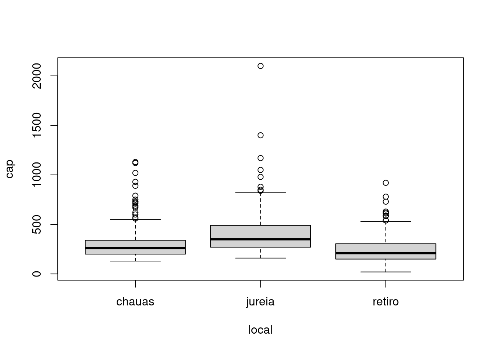
# ou poderia escrever assim
boxplot(caixeta$cap ~ caixeta$local)
# note o valor extremo em jureia
vl <- caixeta$local == "jureia" & caixeta$cap > 1500
caixeta[vl, ]| local | parcela | arvore | fuste | cap | h | especie | ab | |
|---|---|---|---|---|---|---|---|---|
| 557 | jureia | 4 | 106 | 1 | 2100 | 160 | Calophyllum brasiliensis | 3463606 |
## espalhagrama
plot(h ~ cap, data = caixeta) # usando formula e especificacao dos dados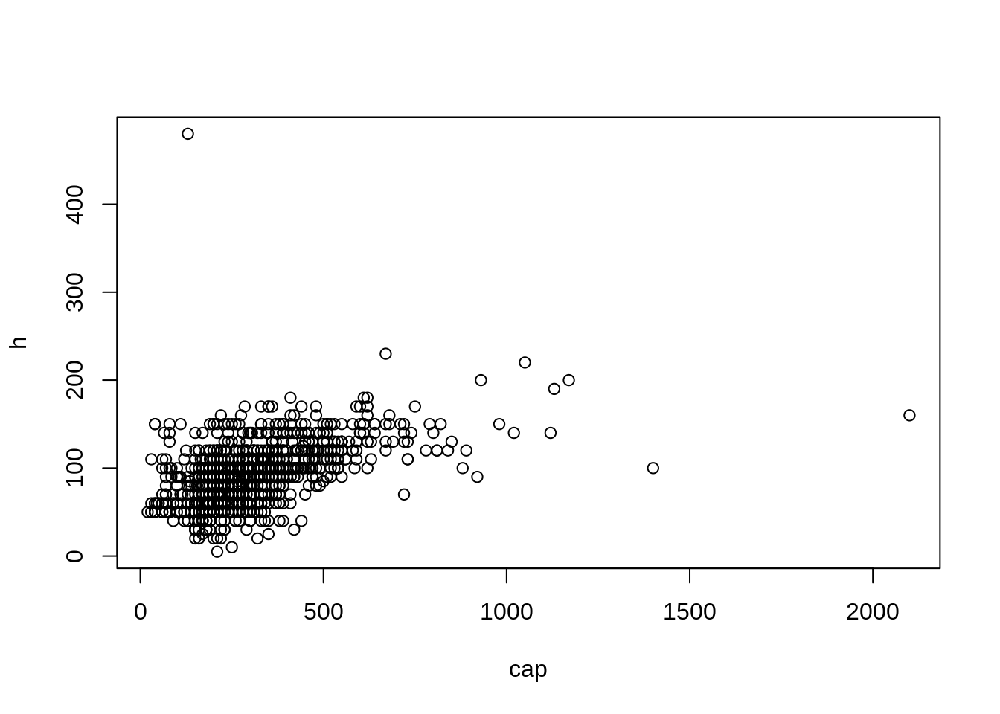
# apenas para jureia
plot(h ~ cap, data = caixeta, subset = local == "jureia")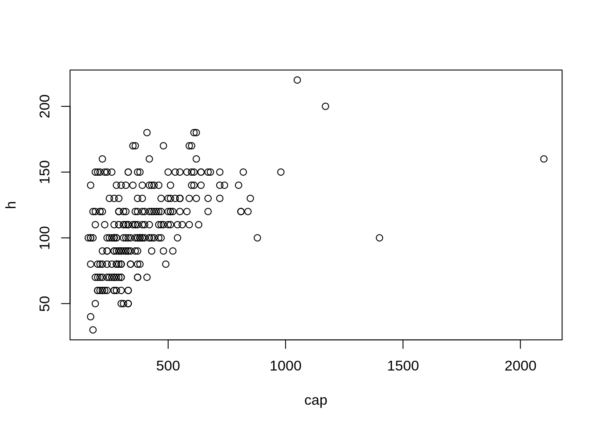
plot(caixeta$h ~ caixeta$cap) # usando formula sem especificacao dos dados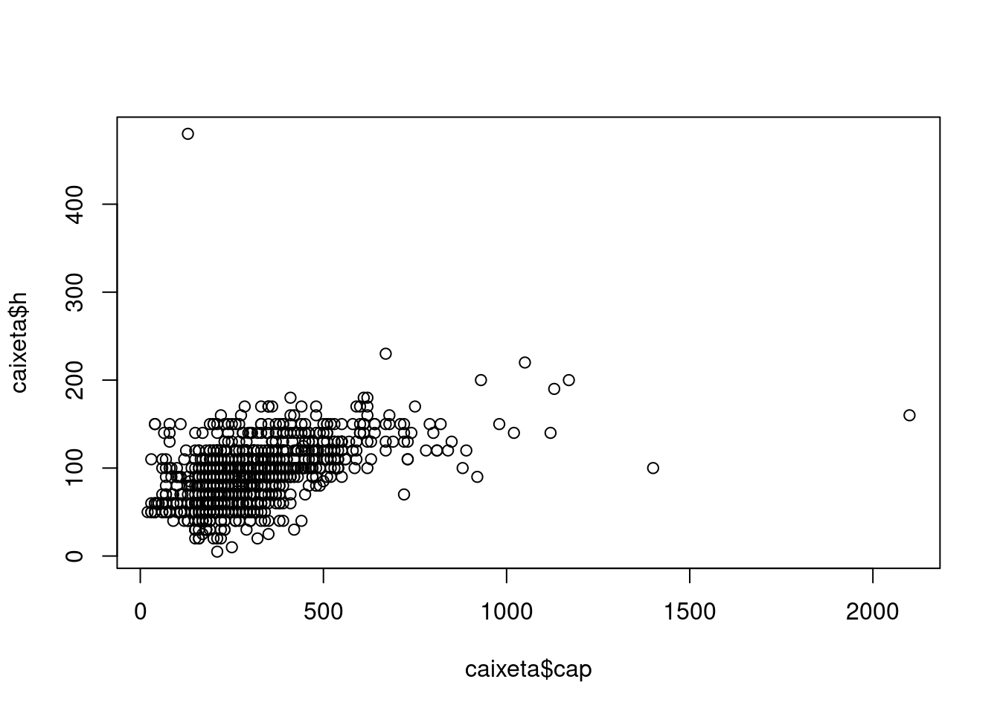
plot(caixeta$cap, caixeta$h) # especificando eixos separadamente (veja inversao)names(caixeta)## [1] "local" "parcela" "arvore" "fuste" "cap" "h" "especie"
## [8] "ab"# mostra linha de tendencia da relacao
scatter.smooth(caixeta$cap, caixeta$h)## pairs
## Matriz de espalhagramas das medidas das arvores no dataframe iris
data(iris)
names(iris)## [1] "Sepal.Length" "Sepal.Width" "Petal.Length" "Petal.Width" "Species"pairs(iris) # todas as variaveis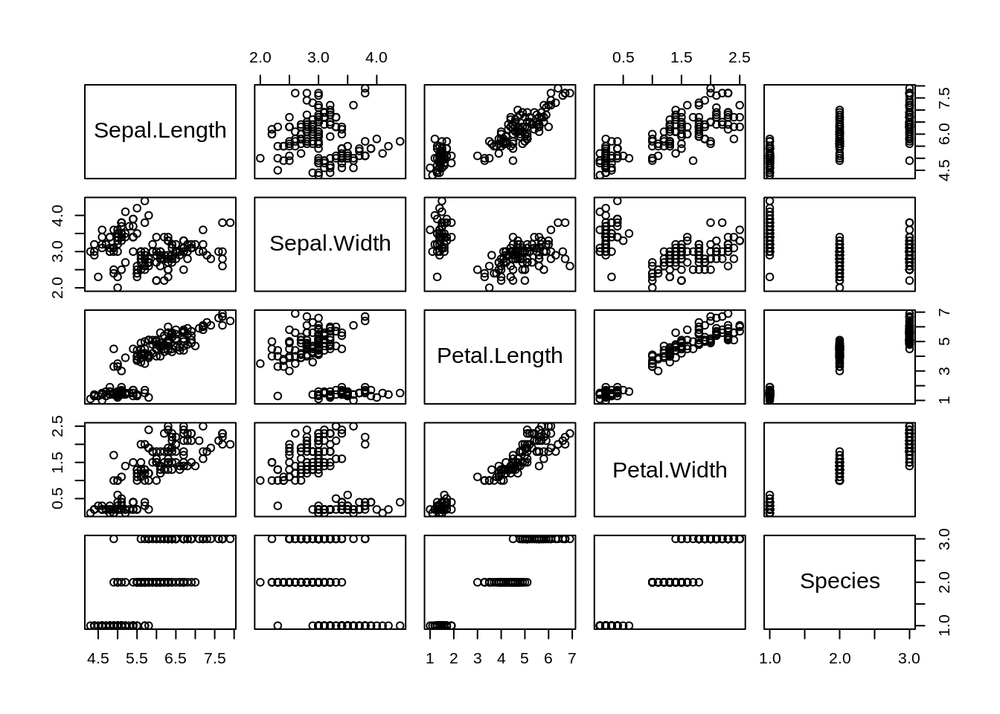
pairs(iris[, -ncol(iris)], ) # menos a ultima coluna = especie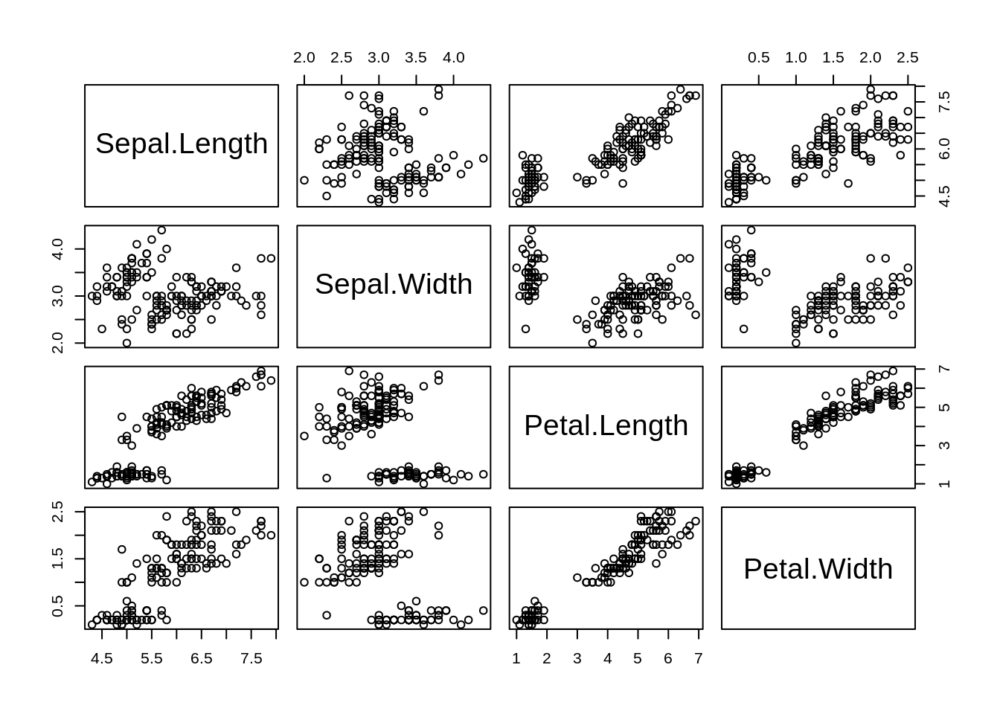
# colorindo por especie
pairs(iris[, -ncol(iris)], pch = 21, bg = c("red", "green", "blue")[unclass(iris$Species)])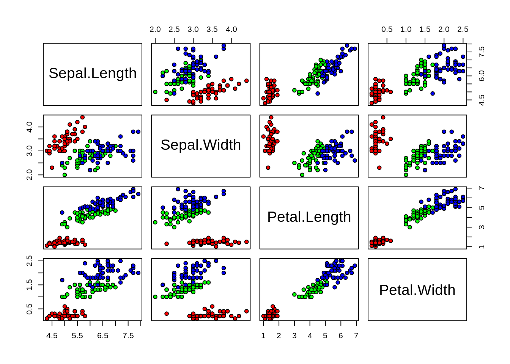
?unclass # remove o atributo classe do objeto, então especies viram números# poderia fazer assim, tendo em vista que iris$Species é um fator:
pairs(iris[, -ncol(iris)], pch = 21, bg = c("red", "green", "blue")[as.numeric(iris$Species)])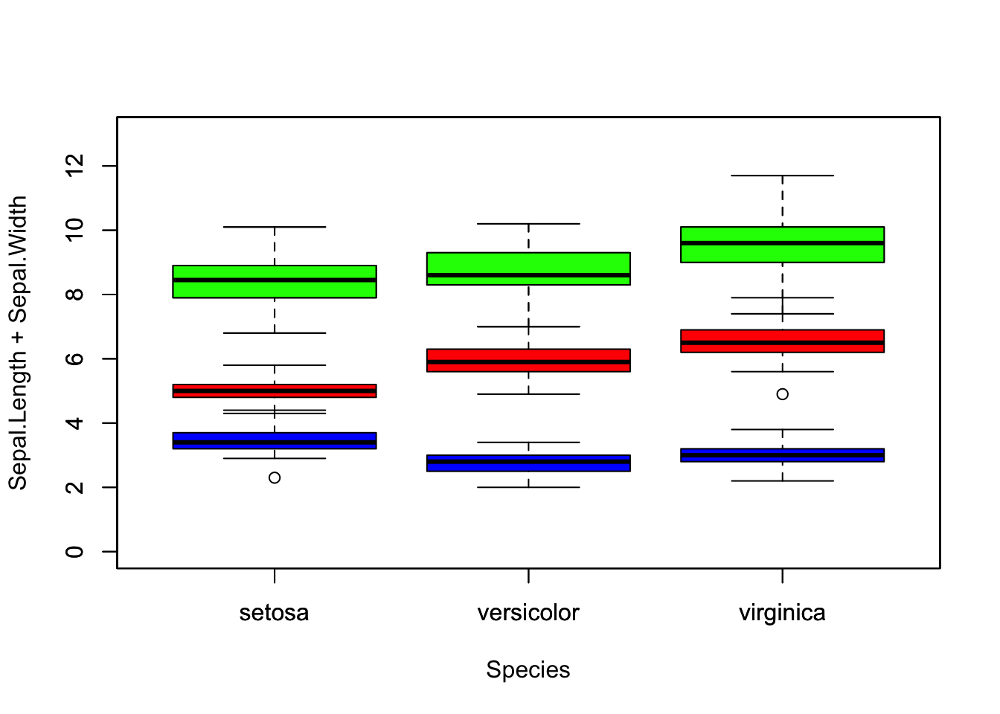
## Essa figura é basicamente a expressao grafica da matriz de correlações entre todas as variáveis:
cor(iris[, -ncol(iris)])| Sepal.Length | Sepal.Width | Petal.Length | Petal.Width | |
|---|---|---|---|---|
| Sepal.Length | 1.0000000 | -0.1175698 | 0.8717538 | 0.8179411 |
| Sepal.Width | -0.1175698 | 1.0000000 | -0.4284401 | -0.3661259 |
| Petal.Length | 0.8717538 | -0.4284401 | 1.0000000 | 0.9628654 |
| Petal.Width | 0.8179411 | -0.3661259 | 0.9628654 | 1.0000000 |
# veja que essa matriz é simétrica e a diagonal tem valores =1, pois a correlação entre a variável e ela mesma é 100%
tbcor <- cor(iris[, -ncol(iris)])
# na diagnoal
diag(tbcor)## Sepal.Length Sepal.Width Petal.Length Petal.Width
## 1 1 1 1# acima da diagonal
vacima <- tbcor[upper.tri(tbcor)]
# abaixo da diagonal
vabaixo <- tbcor[lower.tri(tbcor)]
# entao, se é simétrica, os vetores contém os mesmos valores (a ordem não é a mesma por isso o sort)
sort(vacima) == sort(vabaixo)## [1] TRUE TRUE TRUE TRUE TRUE TRUE13.5 Outros gráficos bivariados
As funções xyplot() e bwplot() são oriundas do pacote lattice (Sarkar 2020) e permitem visualizar rapidamente relações entre variáveis por subgrupos de forma simples e rápida.
# muitas funções do R interpretam formulas, que é uma forma simbólica curta para designar coisas complexas
?formula # leia com atenção a sessão de detalhes de como você pode especificar formulas, se ainda não fez isso, pois isso é uma forma de indicar ao R um modelo para graficar# no objeto iris
plot(Sepal.Length + Sepal.Width ~ Species, data = iris, ylim = c(0, 13))
plot(Sepal.Length ~ Species, data = iris, add = T, col = "red", xlab = "", ylab = "", xaxt = "n", yaxt = "n")
plot(Sepal.Width ~ Species, data = iris, add = T, col = "blue", xlab = "", ylab = "", xaxt = "n", yaxt = "n")
# ou seja a primeira figura é o mesmo que fazer:
tt <- iris$Sepal.Length + iris$Sepal.Width
plot(tt ~ iris$Species, add = T, col = "green")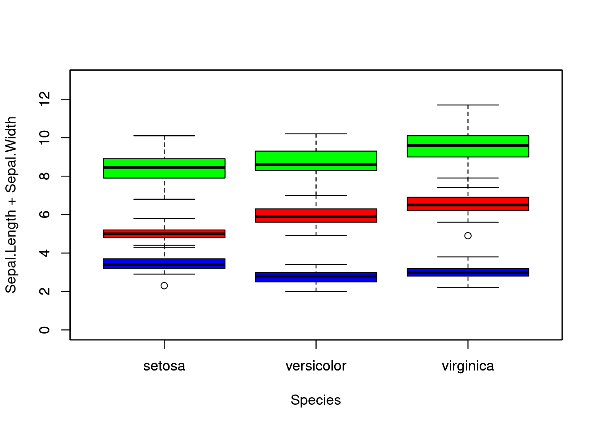
# pois neste caso estamos plotando boxplots e a distribuicao dos valores da interacao entre comprimento e largura é basicamente a soma dos valores## Graficos condicionados com o pacote lattice
library("lattice") # carregue o pacote# qual a relacao entre comprimento de sepalas e comprimento de petalas por especie?
?xyplot # veja o help dessa funcaoxyplot(Sepal.Length ~ Petal.Length | Species, data = iris)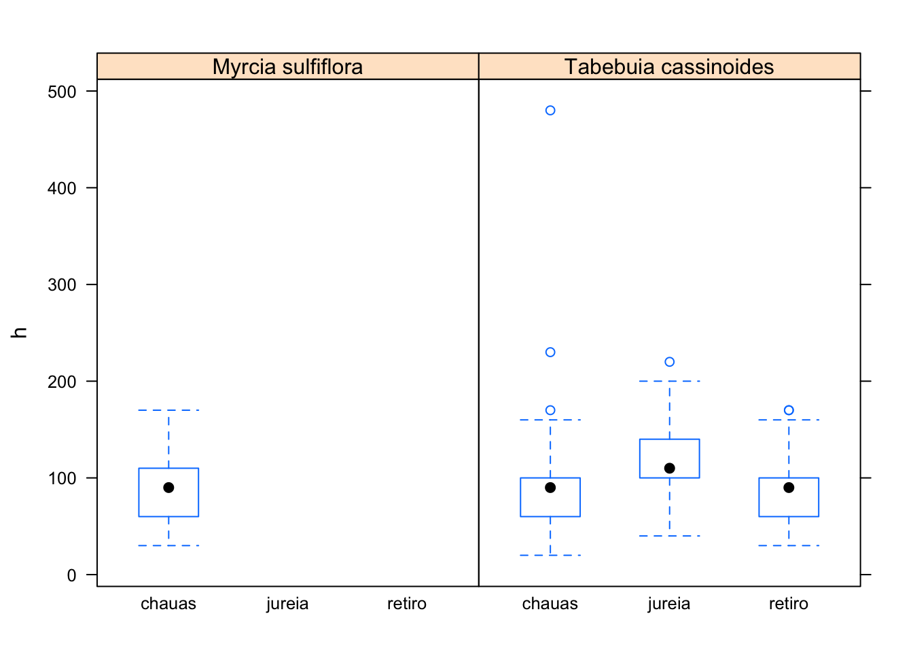
# ou mais complexo. Qual a relação entre as quatro variaveis em iris, por especie?
xyplot(Sepal.Length + Sepal.Width ~ Petal.Length + Petal.Width | Species, data = iris, scales = "sliced", auto.key = T)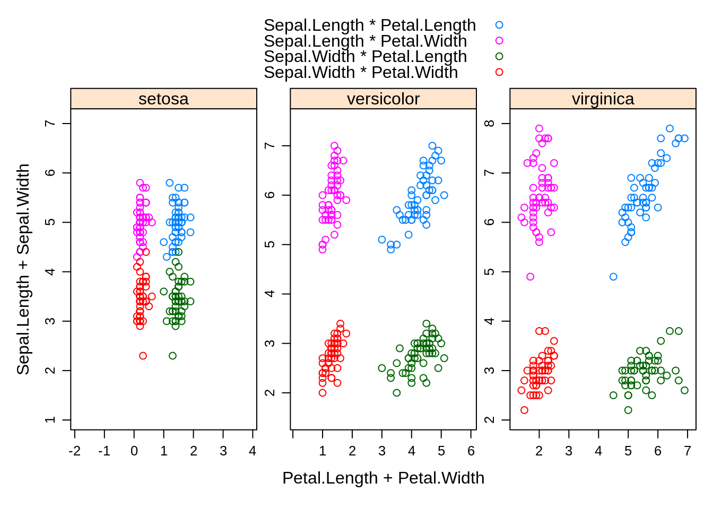
# note que neste caso as correlacoes estao individualizadas por espécie e que as cores representam as relações das variáveis par par?bwplot # para multiplos boxplots## um data.frame com as duas especies mais abundantes do caixetal
head(caixeta)| local | parcela | arvore | fuste | cap | h | especie | ab |
|---|---|---|---|---|---|---|---|
| chauas | 1 | 1 | 1 | 210 | 80 | Myrcia sulfiflora | 34636.06 |
| chauas | 1 | 3 | 1 | 170 | 80 | Myrcia sulfiflora | 22698.01 |
| chauas | 1 | 4 | 1 | 720 | 70 | Syagrus romanzoffianus | 407150.41 |
| chauas | 1 | 5 | 1 | 200 | 80 | Tabebuia cassinoides | 31415.93 |
| chauas | 1 | 6 | 1 | 750 | 170 | indet.1 | 441786.47 |
| chauas | 1 | 7 | 1 | 320 | 80 | Myrcia sulfiflora | 80424.77 |
tb <- table(caixeta$especie)
maisabund <- names(tb[order(tb, decreasing = T)][1:2])
maisabund## [1] "Tabebuia cassinoides" "Myrcia sulfiflora"# filtra os dados orginais para essas especies
caixeta2 <- caixeta[caixeta$especie %in% maisabund, ]
# distribuicao dos valores de altura por local para cada especie
bwplot(h ~ local | especie, data = caixeta2)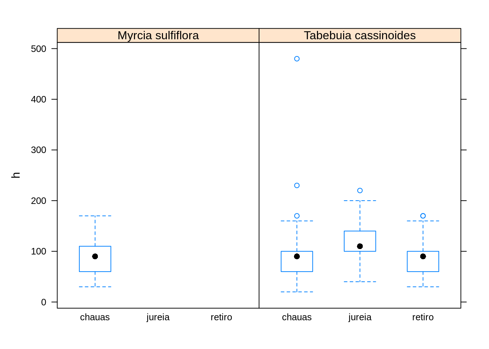
# distribuicao dos valores de cap por classes de altura, por especie
bwplot(h ~ cap | especie, data = caixeta2)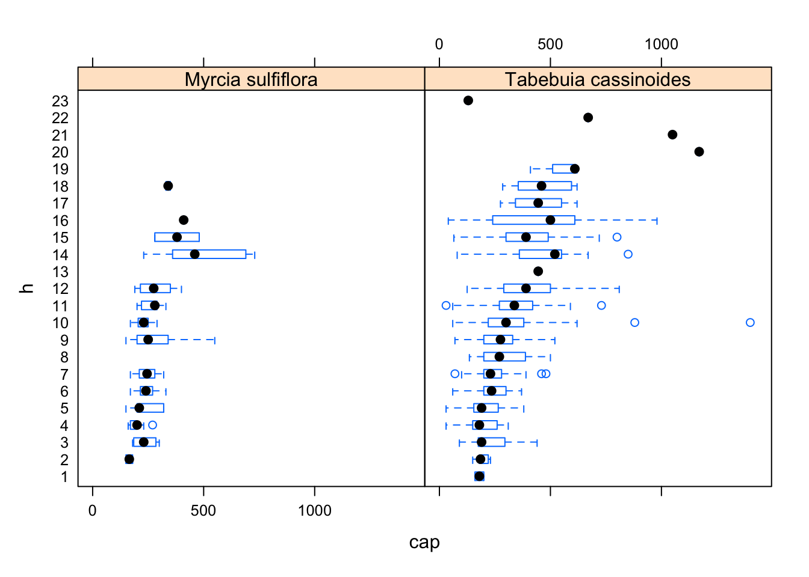
# relacao altura vs cap por especie e por local
xyplot(h ~ cap | especie + local, data = caixeta2, auto.key = T)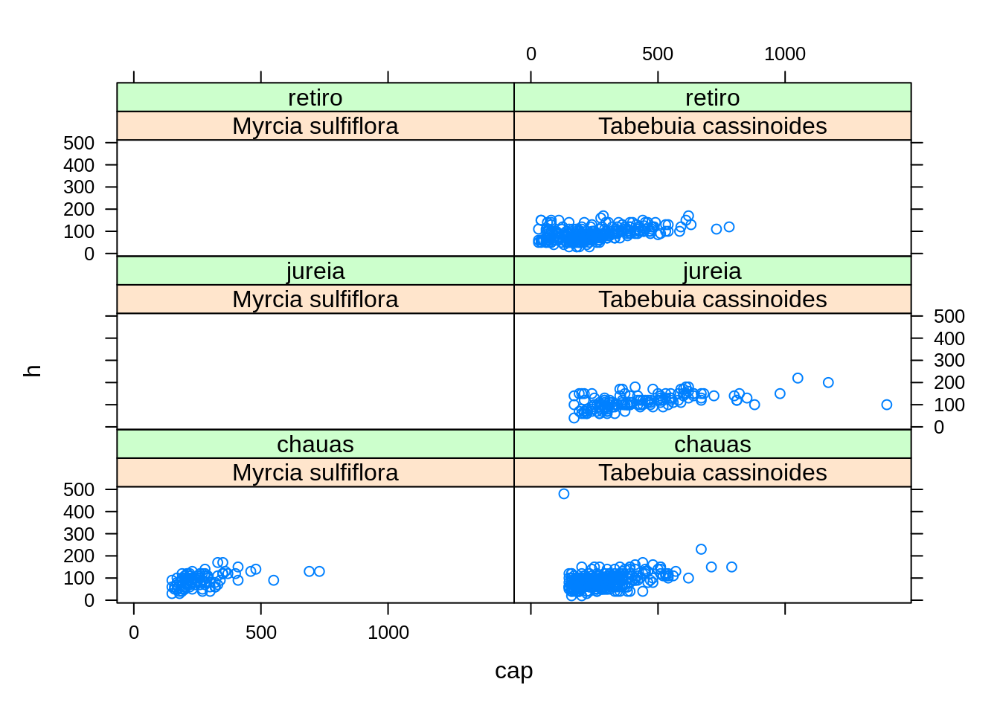